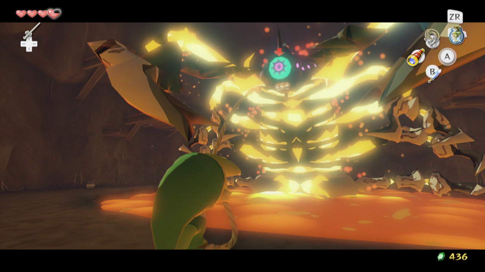
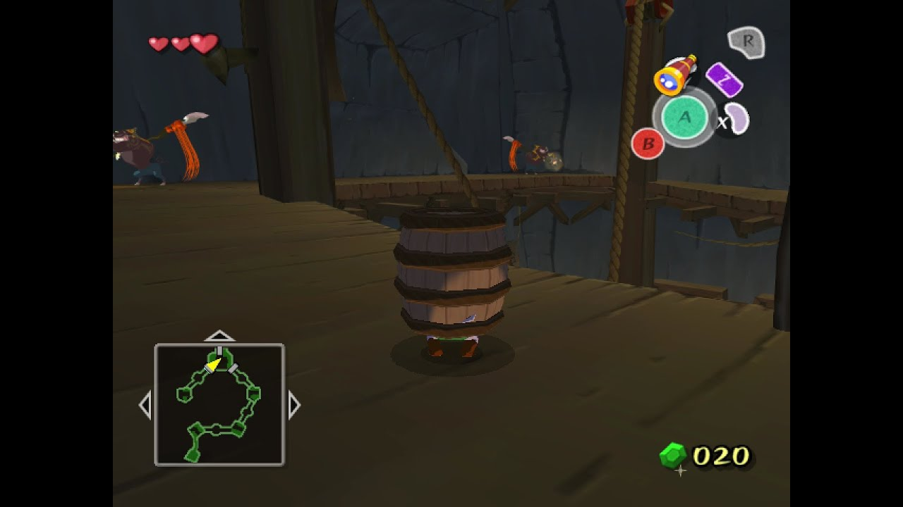

The legend of Zelda Windwaker
Just one of the many juggernauts the gamecube has to offer.The game is set on a group of islands in a vast sea, a departure for the series. The player controls series protagonist Link as he attempts to save his sister from the sorcerer Ganon and becomes embroiled in a struggle for the Triforce, a sacred wish-granting relic. Aided by allies including pirate captain Tetra – an incarnation of Princess Zelda – and a talking sailboat named the King of Red Lions, Link sails the ocean, explores islands, and traverses dungeons to acquire the power necessary to defeat Ganon. Wind, which facilitates sailing, plays a prominent role and can be controlled with a magic conductor's baton called the Wind Waker.
Development
The Wind Waker was directed by Eiji Aonuma and produced by Shigeru Miyamoto and Takashi Tezuka. Development b egan in 2000. It retains the basic 3D gameplay of its predecessors, Ocarina of Time and Majora's Mask, but the team chose to avoid the realistic graphics of previous games. Instead, they implemented a distinctive cartoon-like art style created through cel shading. At its release, The Wind Waker received critical acclaim for its visuals, gameplay, level design, music, and story. The art direction proved divisive among players and contributed to comparatively weak sales; the game sold 4.6 million copies, far below the 7.6 million sold by Ocarina of Time. As a result, Nintendo changed directions with the next major Zelda installment, the more realistically styled Twilight Princess. The Wind Waker's reputation improved over time, and with retrospective analyses , it is now considered one of the greatest video games ever made. The Wind Waker popularized the "Toon Link" character, and received two direct sequels for the Nintendo DS, Phantom Hourglass (2007) and Spirit Tracks (2009). A high-definition remaster, The Legend of Zelda: The Wind Waker HD, was released for the Wii U in September 2013.
Dungeons
Forsaken Fortress The Forsaken Fortress is such a cool introduction to the game, offering a unique stealth-based challenge. It sets the tone for the adventure, with its eerie atmosphere and intense moments of evading enemies. Plus, the looming Helmaroc King is an exciting threat, making it feel like a true adventure.
characters
The Legend of Zelda: The Wind Waker is filled with a variety of unique and memorable characters. Here are some of the standout characters from the game
- link Role: Protagonist
- Ganondorf Role: Antagonist
- Tetra Role: Pirate Captain
- Aryll Role: Link’s Sister
- Grandmother Role: Link’s Grandmother
.avif)